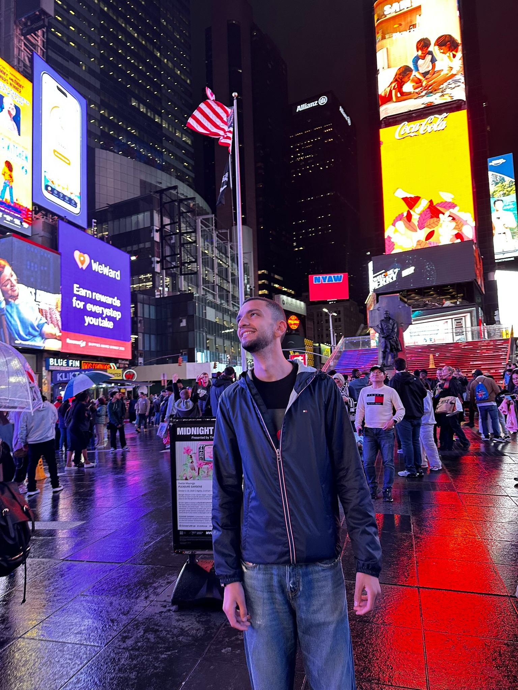

I am a Computer Engineering student at The American University in Cairo, expected to graduate in 2026. My academic background is complemented by hands-on work in software, hardware, cybersecurity, databases, machine learning, and distributed systems, along with strong extracurricular leadership in student activities, budgeting, logistics, crisis management, and event execution.
South of Police Academy, Fifth Settlement, New Cairo, Cairo, 11835
Phone: 01066696903
Email: adessouky@aucegypt.edu
AUC Exotics, Jungle Mania, Luminous Planet, World Cup Final Screening, Cap ’N Gown 2023 and 2024, Goat X Red Bull Hat Trick, The Elite Stand Up Comedy Show, AUC X Karting, Retro, Turbo, InLight, El Mahata, Quidditch Tournament, Rick and Morty Paintball Tournament, Halloween Carnival, Cap ’N Gown 2025, and Negoom Ramadan Football Tournament.